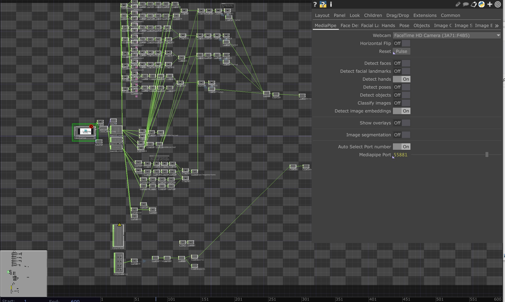
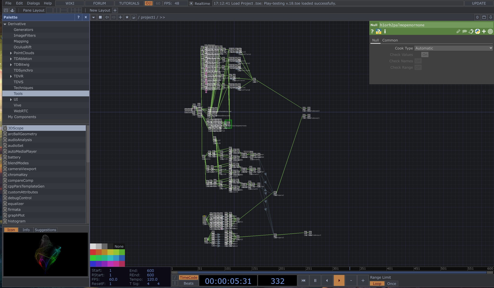
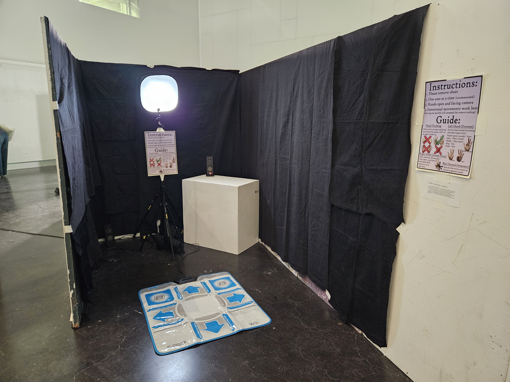
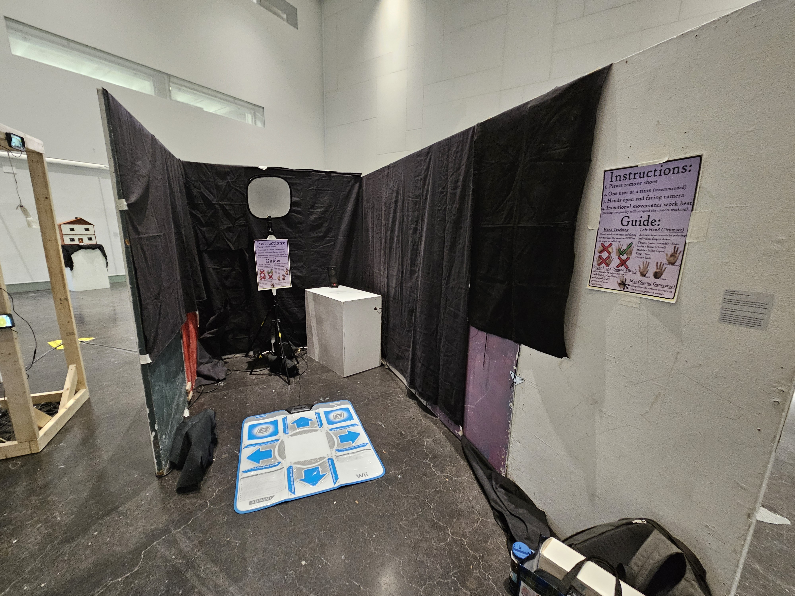
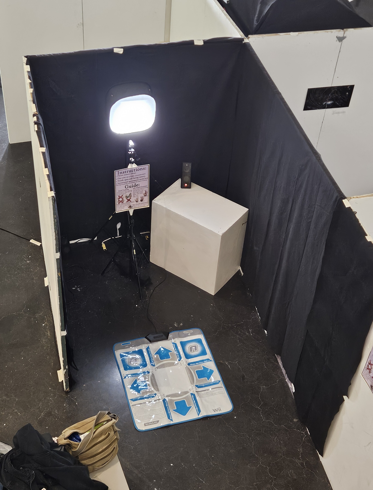
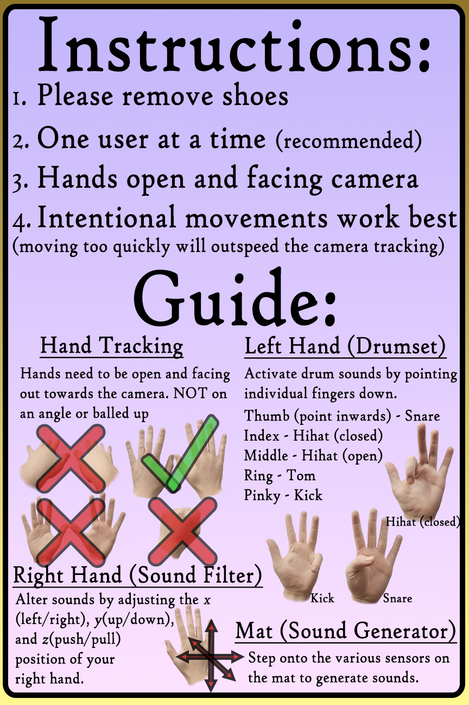
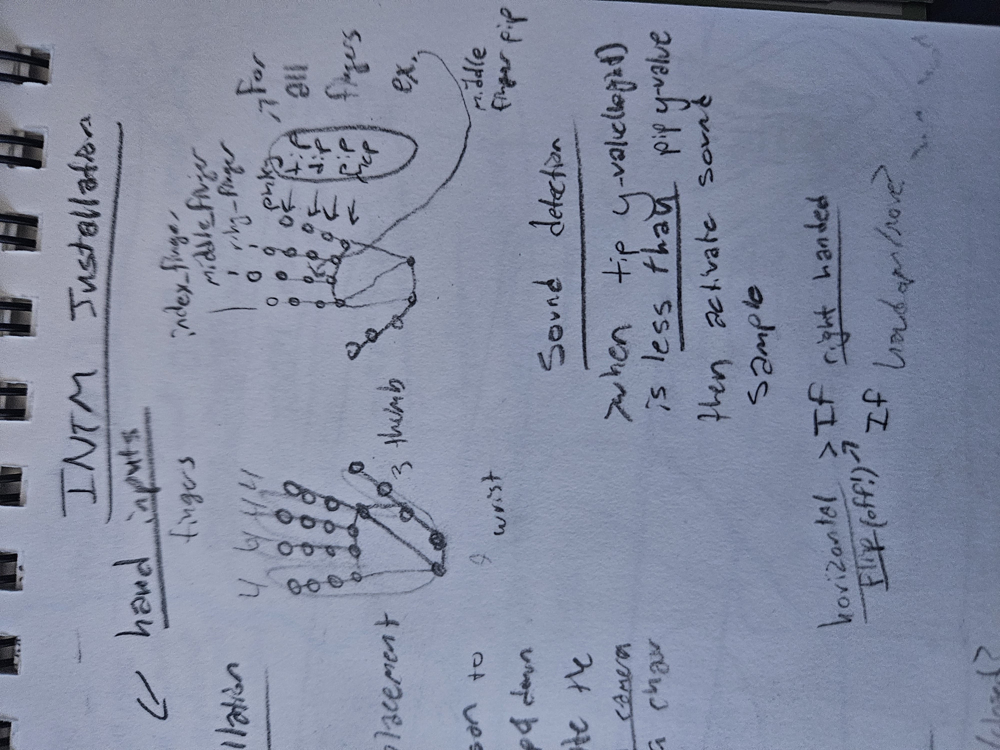
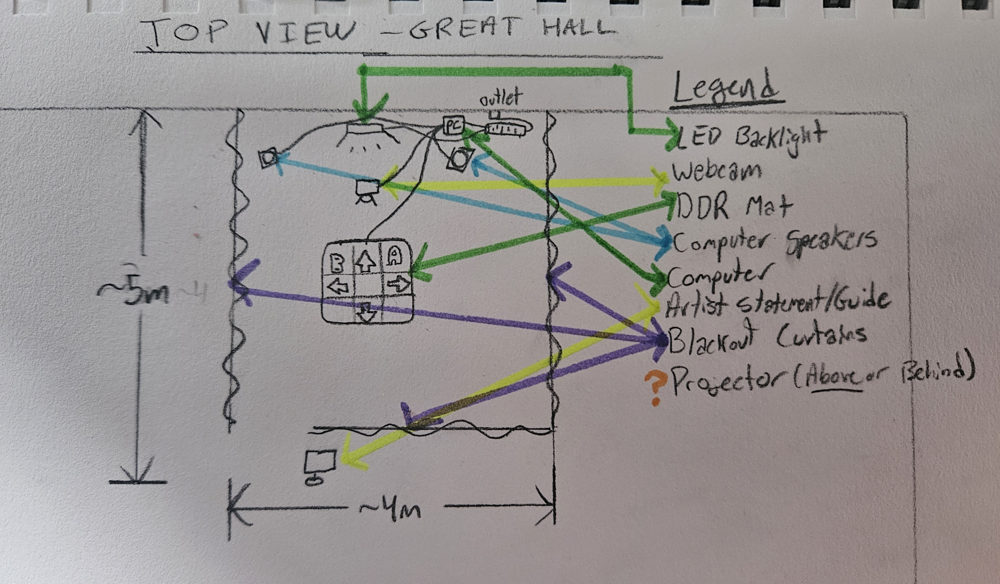

Artist Statement
My passion for interactive work stems from my vast experience with games and systems of play. Play-testing v.13 combines a personal love for technology, games, music, and movement, into a sound-creation based installation.Informed by research into interactive software and human-centered design, Play-testing v.13 invites audiences to engage in personal exploration and experimentation by testing the different available interaction methods. Let fun be your guide!
Project Summary
This project is an interactive installation. When users approach they are confronted with a webcam, a Dance-Dance Revolution mat, and a guide (See images below). The goal of the installation is to experiement and try out the different interaction methods, as well as make some interesting sounds.
By stepping on different pads on the mat, different sounds are created (including simple loops and animal noises!) The Dance-Dance Revolution mat feeds into a Touchdesigner program that reads which pad is being stepped on and will play the corresponding sound.
The webcam facing the user feeds into a Touchdesigner program that tracks the live position of many different points on the user's hands. Using this information, I am able to distinguish between the left and right hand. The fingers on the left hand control a drumset, and the position of the right hand in space adds and removes different filters from sounds generated from the Dance-Dance Revolution mat. By moving their right hand along the x, y, or z axis, the filters are applied and strengthened or weakened.
My favourite part of this project is the hand controlled drumset. Enough practice lets users create really good sounding rhythms. I have also considered focusing more on this aspect of the project and turning it into its own piece.
Click here to download and read my long form critical reflection, written summary, and annotated bibliography for this project.
Project Videos
*Because my installation was part of a group exhibition, my projects audio output needed to be quiet, so as to not disturb other nearby projects. The following videos did not capture the sounds created by the two users interacting with the piece*
Demo Video 1
A short video of a user interacting with my work.
Demo Video 2
A demonstration of the hand tracking interaction. Plus a view of the installation.
Images
Click on any image to view it fullscreen in a new tab.









